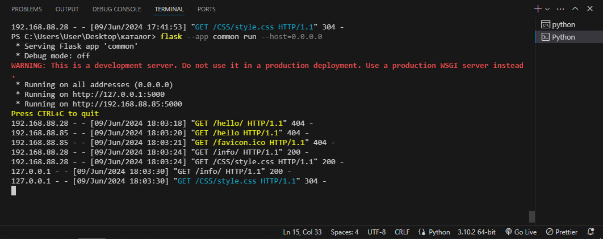
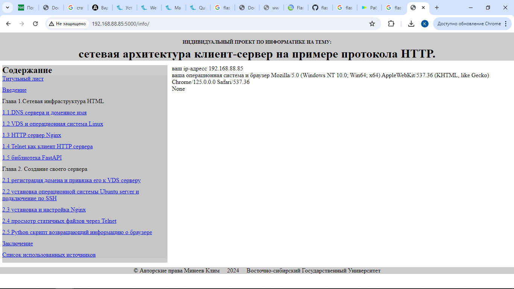
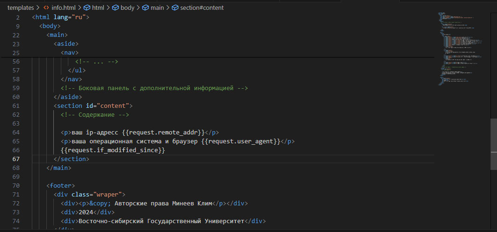

<!DOCTYPE html>
<html lang="ru">
  <head>
    <meta charset="UTF-8" />
    <link rel="stylesheet" href="CSS/style.css" />
    <meta name="viewport" content="width=device-width, initial-scale=1.0" />
    <title>Document</title>
  </head>
  <body>
    <header>
      <!-- Логотип и другие элементы заголовка -->
      <h1>
        <span class="pretitle"
          >Индивидуальный проект по информатике на тему:</span
        >
        <br /><span class="title"
          >сетевая архитектура клиент-сервер на примере протокола HTTP.</span
        >
      </h1>
    </header>

    <main>
      <aside>
        <h2>Содержание</h2>
        <nav>
          <ul class="menu">
            <li class="split"><a href="index.html">Титульный лист</a></li>
            <li class="split"><a href="intro.html">Введение</a></li>
            <li class="split">Глава 1.Сетевая инфраструктура HTML</li>
            <li class="split"><a href="1.1.html">1.1.DNS сервера и доменное имя</a></li>
            <li class="split"><a href="1.2.html">1.2 VDS и операционная система Linux</a></li>
            <li class="split"><a href="1.3.html">1.3 HTTP сервер Nginx</a></li>
            <li class="split"><a href="1.4.html">1.4 Telnet как клиент HTTP сервера </a></li>
            <li class="split"><a href="1.5.html">1.5 Динамические страницы и web приложения </a></li>
            <li class="split">Глава 2. Создание своего сервера</li>
            <li class="split">
              <a href="2.1.html"
                >2.1 регистрация домена и привязка его к VDS серверу</a
              >
            </li>
            <li class="split">
              <a href="2.2.html"
                >2.2 установка операционной системы Ubuntu server и подключение
                по SSH</a
              >
            </li>
            <li class="split"><a href="2.3.html">2.3 установка и настройка Nginx</a></li>
            <li class="split"><a href="2.4.html">2.4 просмотр статичных файлов через Telnet</a></li>
            <li class="split">
              <a href="2.5.html"
                >2.5 Python скрипт возвращающий информацию о браузере</a
              >
              <li class="split"><a href="2.6.html">2.6 размещение веб приложений на сайте</a></li>
            </li>
            <li class="split"><a href="outro.html">Заключение</a></li>
            <li class="split"><a href="sources.html">Список использованных источников </a></li>
            <!-- ... -->
          </ul>
        </nav>
        <!-- Боковая панель с дополнительной информацией -->
      </aside>
      <section id="content">
        <!-- Содержание -->
        <h2 class="center mb-1">2.5 Python скрипт возвращающий информацию о браузере</h2>

        <p>Чтобы сделать сайт который будет показывать информацию о клиенте (динамическую страницу) нам потребуется Flask — фреймворк для создания веб-приложений на языке программирования Python.</p>
        <p>Предварительно установите Python, а после запустите терминал и установите Flask:</p>
        <pre>
        <p>pip install Flask</p>
        </pre>
        <p>Теперь нам надо создать файл .py внутри нашего каталога и при помощи функции возврата запроса в наш html файл получим информацию о клиенте и записываем ее в переменные.</p>
        <p>Содержимое файла с именем common.py:</p>
        
        <pre><p>from Flask import render_template, url_for, request – импортируем функции render_template, url_for, request.</p></pre>
        <pre><p>from Flask import Flask, send_from_directory – импортируем сам Flask и функцию send_from_directory.</p></pre>
        <pre><p>app = Flask(__name__) – переменной app задаем имя Flask</p></pre>
        <pre><p># здесь мы указываем имя файла, содержащего стили.</p></pre>
        <pre><p>@app.route('/CSS/<path:path>') – указываем путь до CSS.</p></pre>
        <pre><p>def send_static(path):</p></pre> 
        <pre><p class="split">return send_from_directory('CSS', path) – функция возвращения файла расположеного по пути path. </p></pre>
        
        <pre><p>@app.route('/info/')</p></pre>
        <pre><p>def info():</p></pre>
            <pre><p># print(dir(request))</p></pre>
            <pre><p># print(request.if_modified_since)</p></pre>
            <pre><p># print(request.headers)</p></pre>
            <pre><p># Создание динамической страницы из шаблона и переменной request.</p></pre>
            <pre><p>return render_template('info.html', request=request)</p></pre>
         <p>Запустив это приложение в терминале:</p>
        <pre><p>flask --app common run --host=0.0.0.0 </p></pre>
        <p>мы запустим простой web-сервер с нашим приложением.</p>
        <p>Этот web-сервер используется только для разработки и исправления ошибок во время разработки.</p>
        
        
        
        
        
        <p>При успешном запуске простого сервера на экран будет выведено следующее:</p>
        
        
        <p>Сверху от “Press CTRL+C to quit” программа запускается и говорит, что работает на ip-адрессе 192.168.88.85 на порту 5000.</p>
        <p>А то что ниже это клиенты (устройства) пытающиеся подключиться к нашему локальному серверу и сам сервер пытающийся найти стили.</p>
        <p>Если ваша программа видит подключающихся к серверу клиентов, то все правильно.</p>
        <p>Далее мы создаем папку template, а в ней создаем новый файл info.html.</p>
        <p>Внутри содержимого данного файла мы можем задавать переменные из списка переменных Flask и они будут представлять информацию о браузере клиента. </p>
        <p class="split">На пример:</p>
        <p>{{request.remote_addr}} – ip-адрес клиента.</p>
        <p class="split">{{request.user_agent}} – Операционная система, Браузер.</p>
        
        
        
        
        
        
        
        
        
        <p>Так они будут использоваться в нашем случае:</p>
        
        
        Так выглядит на HTML:
        
        
        
    <footer>
      <div class="wraper">
        <div><p>&copy; Авторские права Минеев Клим</p></div>
        <div>2024</div>
        <div>Восточно-сибирский Государственный Университет</div>
      </div>
    </footer>
  </body>
</html>
